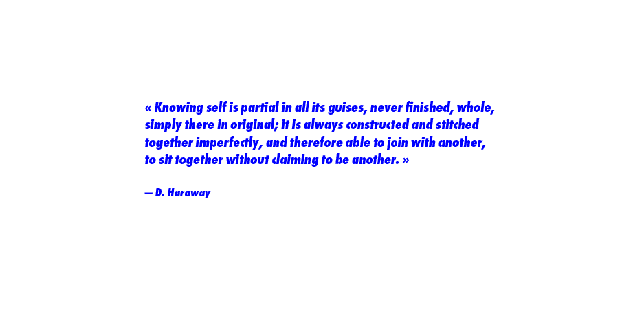
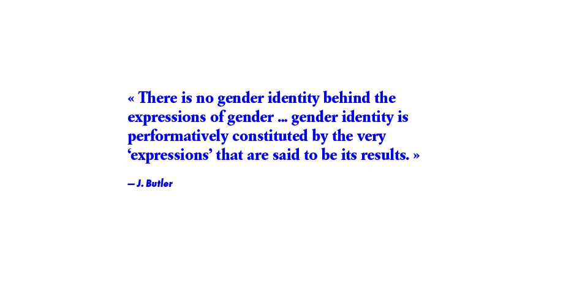
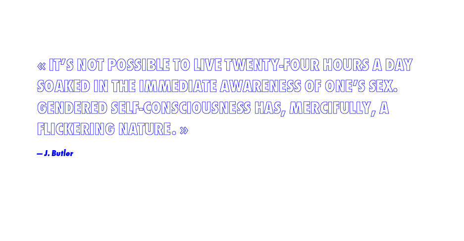
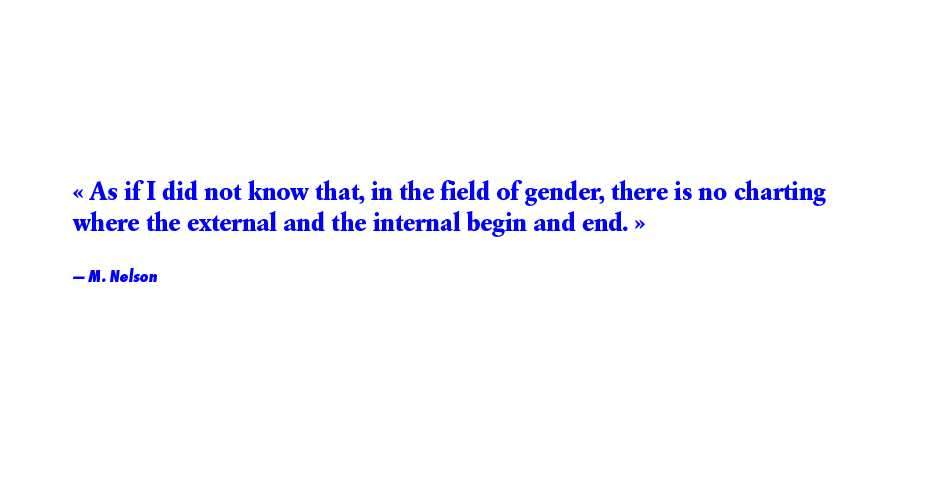
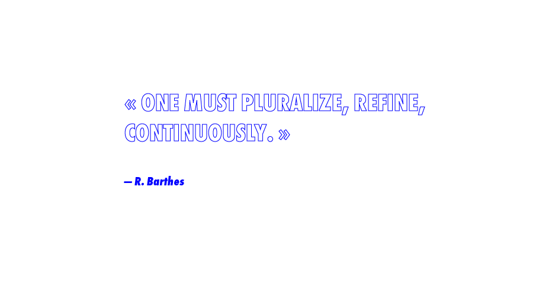

« What all these features of fluids amount to, in simple language, is that liquids, unlike solids, cannot easily hold their shape. Fluids, so to speak, neither fix space nor bind time. While solids have clear spatial dimensions but neutralize the impact, and thus downgrade the significance, of time (effectively resist its flow or render it irrelevant), fluids do not keep to any shape for long and are constantly ready (and prone) to change it; and so for them it is the flow of time that counts, more than the space they happen to occupy: that space, after all, they fill but ‘for a moment’. In a sense, solids cancel time; for liquids, on the contrary, it is mostly time that matters.»
— Zygmunt Bauman


Turning into my own
turning on in
to my own self
at last
turning out of the white cage,
turning out of the lady cage
turning at last
— L. Clifton


Stopped as an attribute of a person, sex inequality, takes the form of gender; moving as a realisation between people, it takes the form of sexuality. Gender emerges as the congealed form of the sexualization of inequality between men and women.
— C. Mackinnon